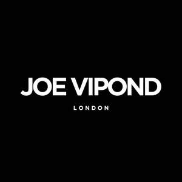

Trade Mark Journal No.2025/024 13 June 2025
UK00004211267 29 May 2025 (3,35,44)

- Class 3
- Hair grooming preparations; Hair shampoo; Hair styling gel; Hair cosmetics; Hair shampoos; Hair gel; Hair styling lotions; Hair pomades; Shampoos for human hair; Hair dressings for men; Hair lotions; Hair lotion; Styling sprays for the hair; Colouring lotions for the hair; Hair styling gels; Styling gels for the hair; Hair removal and shaving preparations; Hair styling waxes; Cosmetic preparations for the hair and scalp; Hair styling spray; Hair mascara; Hair styling preparations; Hair colouring; Hair moisturisers; Hair care lotions; Hair powder; Non-medicated hair shampoos; Hair texturizers; Hair moisturizers; Hair rinses [for cosmetic use]; Cosmetic hair lotions; Hair creams; Hair sprays; Hair serums; Beauty preparations for the hair; Hair care lotions [for cosmetic use]; Hair relaxers; Cosmetics for the use on the hair; Hair spray; Hair bleach; Hair conditioner; Hair lighteners; Hair cream; Hair gels; Hair care creams; Hair oils; Hair and body wash; Mousses [toiletries] for use in styling the hair; Hair curling preparations; Hair tonics [for cosmetic use]; Hair tonics; Hair nourishers; Hair care serums; Hair conditioners; Mousses being hair styling aids; Hair care serum; Cosmetic hair dressing preparations; Fragrances; Perfume; Colognes; Fragrance sachets; Cologne; Fragrance emitting wicks for room fragrance; Perfumery and fragrances; Perfumes; Oils for perfumes and scents; Body fragrances; Perfume oils; Fragrance refills for non-electric room fragrance dispensers; Aromatics for fragrances; Eau de cologne [cologne water]; Potpourris [fragrances]; Fragrance preparations; Scents; Room fragrances; Amber [perfume]; Household fragrances; Aromatics for perfumes; Aftershave; Aftershave lotions; Perfume water; Musk [perfumery]; Air fragrance preparations; Fragrances for automobiles; Extracts of perfumes; Body deodorants [perfumery]; Cologne water; Aftershaves; Room perfume sprays; Deodorants for personal use [perfumery]; After-shave gel; Eau de colognes; Air fragrance reed diffusers; Liquid perfumes; Fragrance sachets for eye pillows; Extracts of flowers [perfumes]; Flowers (Extracts of -) [perfumes]; Extracts of flowers being perfumes; Natural oils for perfumes; Cedarwood perfumery; Scented water for fragrancing; Aftershave balm; Perfume oils for the manufacture of cosmetic preparations; Aftershave balms; Eau de Cologne; Eau de cologne; Feminine deodorant sprays; Room perfumes in spray form; Aftershave creams; After-shave lotions; Aftershave gels; Scented body lotions; Lavender gel; Fragrance for household purposes; Perfumeries; Synthetic perfumery; Perfumery products; Solid perfumes; Scented oils; Vanilla perfumery; Scented linen sprays; Fragrances for personal use; Scented body creams; Eaux de Cologne; Eaux de cologne; Scented body lotions and creams; Refills for electric room fragrance dispensers; Aftershave moisturising cream; Perfumed powder [for cosmetic use]; Geraniol for fragrancing; Aftershave emulsions; Perfumes for ceramics; Scented body spray; Essences for fragrancing; Synthetic musk; Scented soaps; Synthetic vanillin [perfumery]; Ethereal oils for fragrancing; After-shave; Anti-perspirant deodorants; Eau de parfum; Perfumery; Geraniol fragrancing compounds; Scented sachets; Peppermint oil [perfumery]; Essential oils as perfume for laundry purposes; Shoe sprays; Perfumed sachets; Perfumed soaps; Heliotropin fragrancing compounds; Perfumed body lotions [toilet preparations]; Perfumed soap; Room fragrancing products; Sachets for perfuming linen; Linen (Sachets for perfuming -); Ionone [perfumery]; Perfumed powder; Mint for perfumery; Perfumes for cardboard; After-shave creams; After-shave balms; Perfumed creams; Perfumed powders [for cosmetic use].
- Class 35
- Business management of wholesale and retail outlets; Business management of retail outlets; Online retail services relating to cosmetics; Business management of wholesale outlets; Online retail store services relating to cosmetic and beauty products; Retail services in relation to pharmaceutical preparations; Retail services in relation to fashion accessories; Retail services in relation to hair products.
- Class 44
- Hair salon services for men; Hair salon services for women; Hair styling; Shampooing of the hair; Hair dressing salon services; Hair styling services; Hair salon services; Hair perming services; Hair braiding services; Hair straightening services; Services of a hair and beauty salon; Hair curling services; Hair salon services for children; Hair colouring services; Hair cutting; Hair coloring services; Hair treatment; Body waxing services for hair removal in humans; Cosmetic treatment for the hair; Beauty salons for wig cutting; Hair cutting services; Waxing services for the removal of hair from the human body; Hair dyeing services.
JOE VIPOND HOLDINGS LIMITED